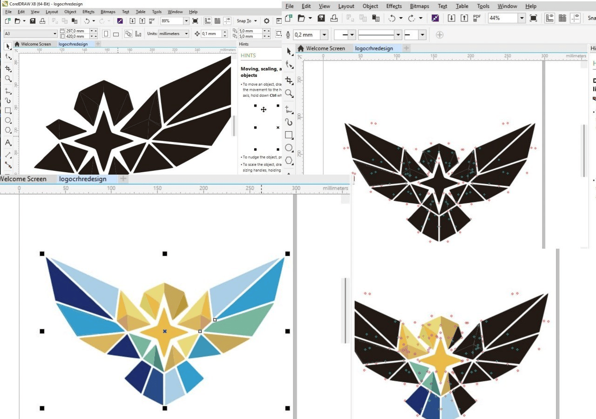

JIKOM-DKV
VOLUME 4, NOMOR 2, JUNI 2026

MELALUI DESAIN LOGO BARU
PADA PERUSAHAAN CERAH
Perusahaan Cerah berjalan di sektor layanan edukasi digital. Belakangan persaingan makin ramai, dan logo yang dipakai selama ini sudah tidak begitu pas lagi. Tampilannya penuh, sulit terbaca begitu ukurannya dikecilkan, dan kurang luwes kalau harus tampil di layar ponsel atau media sosial. Penelitian ini mencoba menjawab persoalan itu dengan merancang ulang logo perusahaan. Harapannya, logo baru punya tampilan yang lebih bersih, modern, dan gampang dipakai di berbagai media tanpa menghilangkan jati diri perusahaan. Seluruh proses dikerjakan lewat pendekatan Design Thinking. Temuan di lapangan menunjukkan bahwa logo yang baru terbaca lebih jelas, lebih membekas di ingatan, dan bisa dipasang di banyak tempat.
Kata Kunci: perancangan ulang, identitas merek, logo, desain visual, Design Thinking.
Perusahaan Cerah works in digital education. Lately competition has been getting busier, and its old logo no longer feels quite right. The design is crowded, hard to read once scaled down, and not flexible enough for phone screens. This study tried to answer that problem by redesigning the logo. The hope was to create something cleaner, more modern, and easier to use across all kinds of media, while still keeping the company's original character. The whole thing was done using Design Thinking.
Keywords: redesign, brand identity, logo, visual design, Design Thinking.
I. PENDAHULUAN
Teknologi bergerak cepat beberapa tahun terakhir. Perubahan ini ikut menggeser cara perusahaan menyapa publiknya. Di lapangan digital, logo bukan cuma penanda biasa. Ia sudah jadi alat komunikasi yang ikut menentukan apakah orang akan memandang sebuah perusahaan punya mutu dan bisa diandalkan atau tidak (Wheeler, 2018). Maka dari itu, logo mesti tetap jelas dilihat, entah itu dicetak sebesar spanduk maupun diselipkan di sudut layar ponsel.
Perusahaan Cerah sendiri berjalan di atas fondasi teknologi. Sayangnya, logo yang ada sekarang terlalu banyak memuat detail. Waktu dipasang di antarmuka mobile, justru merepotkan. Pesan yang ingin disampaikan jadi tenggelam. Dari situ kemudian muncul pikiran buat merombak logo supaya lebih sederhana, bergaris tegas, dan tampil konsisten di mana pun (Rustan, 2019).
Penelitian ini cukup penting untuk dikerjakan. Identitas visual yang kuat bisa membangun rasa percaya, memudahkan orang mengingat merek, dan membuat pengalaman pengguna terasa lebih nyaman. Jadi, urusan membuat logo baru ini bukan sekadar mempercantik tampilan. Ada fungsi nyata yang ikut menopang kemajuan perusahaan.
II. TINJAUAN PUSTAKA
2.1. Identitas Merek di Dunia Digital
Identity branding sebetulnya adalah kumpulan elemen visual dan gagasan yang sengaja disusun untuk membentuk kesan orang terhadap suatu organisasi. Logo, warna, jenis huruf, sampai cara berkomunikasi, semuanya mesti sejalan. Dalam praktik desain sekarang, identitas yang baik paling tidak punya tiga ciri: gampang diingat, bisa dipakai di banyak tempat, dan sanggup mewakili nilai-nilai perusahaan (Wheeler, 2018).
Di dunia digital, logo biasanya jadi hal pertama yang dilihat pengguna. Identitas yang sederhana tetapi kuat cenderung lebih cepat nempel di kepala ketimbang yang sarat hiasan (Rowe, 2019). Kalau semua elemen visual berjalan selaras, perusahaan akan terlihat lebih rapi dan terpercaya (Kotler & Keller, 2016).
2.2. Keunggulan Format Vektor
Gambar berformat vektor semacam SVG bisa diperbesar atau diperkecil tanpa pecah. Sifat ini sangat sesuai buat layar digital yang ukurannya macam-macam. Di samping itu, ukuran filenya kecil (Pradana & Nugroho, 2021).
2.3. Pemilihan Huruf untuk Media Digital
Huruf sans-serif sering jadi pilihan buat tampilan di layar karena bentuknya bersih, sederhana, dan tetap terbaca meski ukurannya kecil (Saraswati & Kurniawan, 2023).
2.4. Psikologi Warna dalam Desain Merek
Warna punya kekuatan besar dalam menumbuhkan kesan. Biru diasosiasikan dengan rasa percaya, kuning dekat dengan semangat serta optimisme (Rustan, 2019).
2.5. Metode Design Thinking
Design Thinking adalah cara merancang yang bertumpu pada kebutuhan manusia. Ada lima langkah: empathize, define, ideate, prototype, dan test (Anggraini & Natasia, 2020).
2.6. Penelitian Sebelumnya
Hidayat dan Rahmawati (2022) menemukan bahwa penyederhanaan bentuk meningkatkan kejelasan logo. Pradana dan Nugroho (2021) menekankan pentingnya format vektor. Kurniawan (2022) membahas konsistensi identitas visual. Putri dan Ramadhan (2023) mengkaji strategi rebranding visual perusahaan rintisan.
III. METODOLOGI PENELITIAN
Penelitian ini menempuh metode Design Thinking. Pendekatan ini memberi ruang luas untuk bereksplorasi, tetapi tetap runut dan fokus pada kebutuhan pemakai (Anggraini & Natasia, 2020). Metode ini cocok karena bisa menyeimbangkan sisi artistik dan tuntutan teknis (Norman, 2013).
Langkah pertama menggali kebutuhan pengguna dan sifat media yang akan dipakai. Berikutnya, merinci kekurangan logo lama, khususnya soal kerumitan bentuk dan daya baca saat ukuran kecil. Sesudah itu, dikumpulkan beragam ide dan sketsa baru dengan bentuk lebih ringkas (Rustan, 2019).

Screenshot Bukti Proses Pengerjaan